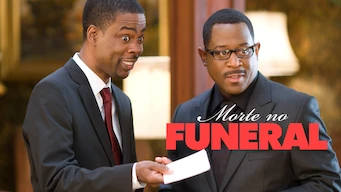

Morte no funeral

2007 - 1h 32min HD
14 Anos -Drogas ilícitas,Linguagem imprópria
História:
Uma família problemática se reúne para o funeral de um de seus membros.
À medida em que vão chegando os parentes, relações escandalosas,
ressentimentos e ameaças transformam
o evento em um caos.
Elenco: Cris Rock,Martin Lawrence, Tracy Morgan, Outross
Data de lançamento: 19 de julho de 2007 (Alemanha)
Diretor: Frank Oz
Gênero: Comédia
© 1996 - 2024. Todos direitos reservados a Comunicação e Participações S.A.